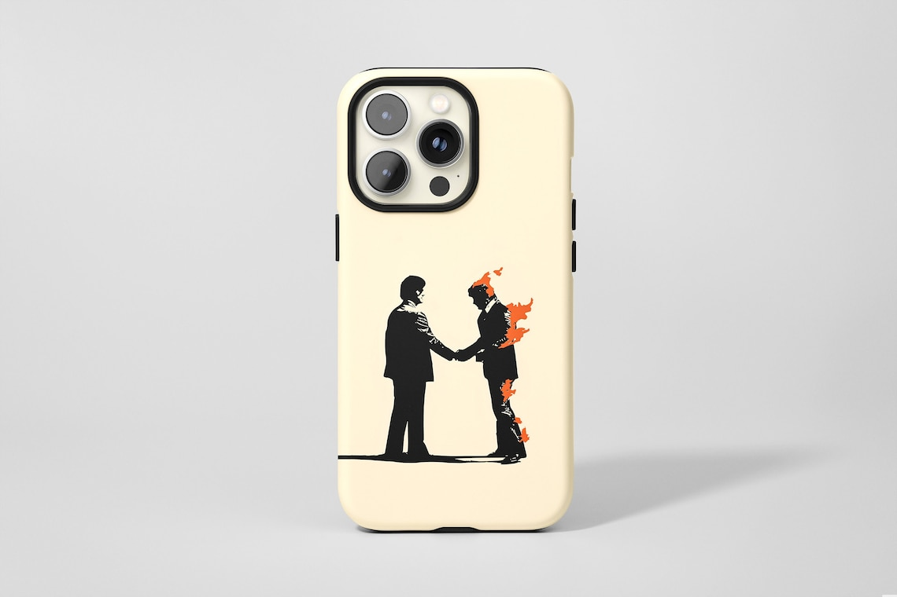

케이스
새로 산 휴대폰의 케이스가 드디어 도착했다. 주문하고부터 14일이 지났다. 케이스가 도착하기 전까지는 혹시나 그 사이에 액정을 깨버릴 지도 모른다는 불안감에, 이전에 쓰던 폰을 계속해서 쓰고 있었다. 이제 완전히 새 폰으로 갈아탈 수 있게 되었다.
문제는, 폰케이스가 내가 생각했던 것과는 많이 달랐다는 것이다. 상품 페이지의 사진에서는 카메라 섬 부분에 검정색으로 가드가 있는 것 처럼 보였는데 실제 케이스에는 없었고, 소재도 무광 소재가 아닌 유광 소재였다. 그리고 이건 어느정도 예상했다만, 상상 이상으로 크고 무거웠다.
크기가 크고 무거운 것에 대해서는 딱히 불만은 없다. 이건 처음부터 각오하고 있었다. 하지만 소재가 유광이라는 것과 카메라의 가드가 없다는 것은 꽤 치명적이다. 나는 손에 땀과 기름이 너무 많아서 쉽게 지문이 뭍는데, 이 재질이면 아주 순식간에 더러워지게 된다. 실제로, 이미 꽤 지저분해졌다. 그리고 폰 자체의 카메라가 워낙 두꺼워서, 이게 케이스를 벗어나버린다. 즉 책상에 폰을 두면 렌즈가 그대로 책상 표면과 마찰된다는 것이다. 이제 폰은 반드시 뒤집어서 놓아야 하게 되었다. 꽤 난감하다.
일단 지문에 대해서는 지문 방지 스프레이를 사용해볼 예정인데, 이걸로 해결이 될지는 모르겠다. 그리고 렌즈는 어쩔 수가 없는 상태다. 조심해서 쓰는 수 밖에 없다.
그래도 예쁘니까 괜찮다. 케이스 자체는 예쁘다.
